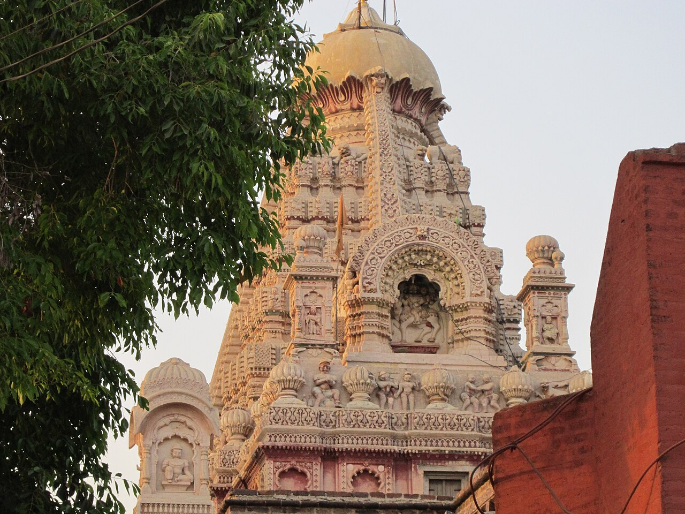

Wikimedia Commons · CC BY-SA 3.0 ⇗
Sthala Puranam
At Verul in Aurangabad district, near the world-famous Ellora caves, the Grishneshwar temple holds one of the twelve Jyotirlingas. 'Ghushmesha' is the Lord who answered the prayer of the devotee Ghushma.
Explanation
The Sthala Purana recounts that Ghushma, a devoted wife who worshipped Shiva every day in the form of clay Shivalingas, was tested by a jealous rival (in some tellings her own sister-in-law) who slew Ghushma's son and cast his body into a well. The mother, not knowing, continued her worship; the Lord appeared and restored her son from the water alive, answering her silent prayer. The temple stands beside the Ellora caves, where the Kailasa (cave 16) is carved from a single rock, linking the Jyotirlinga with the greatest rock-cut shrine of India.
Why the temple is revered
'Ghusmeshaya' from 'Ghushma-Isha' — the Lord of Ghushma. Grishneshwar is revered as the protector of devoted householders, giver of restored joy in the midst of grief, and the eastern anchor of the five western Jyotirlingas. Its darshan combined with the Ellora caves makes a unique double pilgrimage of devotion and art.
🕉 Story
The Grishneshwar tradition celebrates Shiva through a story of devotion and divine grace.
✨ Significance
Its proximity to the Ellora cave complex makes it especially important within the heritage landscape of Maharashtra.